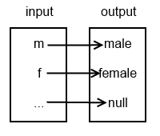

a procedure can be invoked after it has been defined
script is being read from top to bottom
invoke (call) procedure by writing procedure name with correct number of arguments
an argument is an input to a procedure
print can take any number of arguments
greet_user can only be called with zero arguments
Procedure example
def single_letter_greet_user():
greeting = "Hello there!"
for letter in greeting:
print(letter)
any code can be in a procedure
Procedure
def greet_user():
print("Hello there!")
print("Nice to meet you!")
def single_letter_greet_user():
greeting = "Hello there!"
for letter in greeting:
print(letter)
multiple procedure can be defined in the same file
Procedure
def greet_user():
print("Hello there!")
single_letter_greet_user()
print("Nice to meet you!")
def single_letter_greet_user():
greeting = "Hello there!"
for letter in greeting:
print(letter)
procedures can be called inside procedures
Procedure
def greet_user():
print("Hello there!")
print("Nice to meet you!")
greet_user()
be careful not to have a procedure call itself
Parameterized procedures
def print_plus_one(x): # x parameter receives 3 argument
print(x + 1)
print_plus_one(3) # call procedure with 3 as argument
parameters are variables that must be passed into a function when it is called
arguments are the values passed to a function when calling it
parameters and arguments are inside parentheses
in print_double(3), 3 is the argument
in def print_double(x), x is the parameter
notice that the number of arguments match the number of parameters
the parameter takes the value of the argument, e.g. x will have a value of 3 here
Parameterized procedures
def print_plus_one(x): # x parameter receives 3 argument
# x = 3
print(x + 1)
print_plus_one(3) # call procedure with 3 as argument
just like procedures, functions can be called as after as needed
Function example
def add(x, y):
return x + y
sum = add(2, 3)
print("sum is", sum)
functions can have multiple parameters too
add is a user defined function
Function example
def expand_letter_to_gender(letter):
if letter == 'm':
return "male"
elif letter == 'f':
return "female"
else:
return "null"
john = expand_letter_to_gender('m')
joan = expand_letter_to_gender('f')
zorbak = expand_letter_to_gender('q')
print("john is", john)
print("joan is", joan)
print("zorbak is", zorbak)
functions can have multiple possible return values

Scope in Python
The scope of an identifier is the part of a computer program where the identifier, a name that refers to some entity in the program, can be used to find the referred entity.
Wikipedia
Scope is an enclosing context where values and expressions are associated.
Princeton
Scope in Python
functions
generator expressions
classes
modules
Function scope
def print_double(x):
##############
# function scope
x *= 2
print(x) # x no longer exists after this statement
##############
print_double(3)
print(x) # crash - 'x' is not defined
Function scope
def print_double(x):
##############
# function scope
y = x * 2
print(y) # x and y no longer exist after this statement
##############
print_double(3)
print(x) # crash - 'x' is not defined
print(y) # crash - 'y' is not defined
Function scope
def print_double(i):
##############
# function scope
# Changing this i has no effect on other i.
# This i has function scope and is destroyed
# after the function call is finished.
i *= 2
print(i)
###############
i = 0
while i < 10:
print_double(i) # 0, 2, 4, ..., 16, 18
i += 1
print("i after while loop is", i) # 10
i is the name of two separate variables
Global scope
def print_double():
##############
# function scope
# Changing this i actually changes the other i.
global i
i *= 2
print(i)
##############
##############
# global scope
i = 0
while i < 10:
print_double() # 0, 2, 6, 14
i += 1
print("i after while loop is", i) # 15
##############
global keyword is applied to a module scope variable to allow its mutation in local context
global variables can be really useful
but they can make code much harder to reason about
much more state must be remebered and considered when using globals
order of function calls matter
Global scope
def print_double():
##############
# function scope
# Changing this i actually changes the other i.
global i # name 'i' is not defined
i *= 2
print(i)
##############
def print_doubles():
##############
# function scope
i = 0
while i < 10:
print_double() # 0, 2, 6, 14
i += 1
print("i after while loop is", i) # 15
##############
##############
# global scope
print_doubles()
##############
i is no longer at global scope
Modules
a file containing a collection of related functions and objects
any file can import a module
when a file is imported, functions in that module can be used
the set of modules that come with Python by default is the "standard library"
Modules
import sys
print(sys.path)
import keyword followed by the name of the module
the sys module "provides access to some variables used or maintained by the interpreter and to functions that interact strongly with the interpreter"
the sys.path property is "a list of strings that specifies the search path for modules. Initialized from the environment variable PYTHONPATH, plus an installation-dependent default."small, commonly used functions like len are built-in
import and call functions from "metric_imperial_conversions.py"in a separate file
Modules
import metric_imperial_conversions as convert
print(convert.cm_to_inches(10))
shorten name for more readable code
Modules
from metric_imperial_conversions import cm_to_inches
# works as desired
print(cm_to_inches(10))
# crash - name 'kg_to_pounds' is not defined
print(kg_to_pounds(10))
# crash - name 'metric_imperial_conversions' is not defined
print(metric_imperial_conversions.cm_to_inches(10))
only import specified functions
useful for avoiding name conflicts or minimizing memory footprint
Document strings
"""Convert from metric to imperial and back for distance and weights.
"""
def cm_to_inches(cm):
"""Converts centimeters to inches."""
return cm * 0.393
def kg_to_pounds(kg):
"""Converts kilograms to pounds."""
return kg * 2.204
document strings are used to document modules and functions
document string more commonly called "docstring"
let's imagine this module has lots of functions
PEP8 specifies following PEP257 docstring format
use Python interpreter and "help" to see documentation
HTML documentation can be generated from docstrings
the main function
def main():
print("In main function")
if __name__ == "__main__":
main()
__name__ is a special global variable in Python
if a script is executed directly, __name__ is __main__
ensures that only YOUR main function is executed
the main function
import random
print(__name__) # __main__
print(random.__name__) # random
if a script is imported, __name__ is the name of that script/module
the main function
def main():
print("In main function")
if __name__ == "__main__":
main()
all code in imported module is executed
this could mean simply importing a module executes prints etc.
executing code other than function definitions is considered bad practice
the main function
import sys
def main(argv):
# consider using argparse module
print(argv)
if __name__ == "__main__":
main(sys.argv)
main function often used to take command line arguments
the main function
def add(x, y):
return x + y
def main():
sum = add(2, 3)
print("sum is", sum)
if __name__ == "__main__":
main()
code in main is executed as per usu
use the main function in all future scripts
al
Procedure exercise 1
Define and call a procedure with no parameters that adds 2 and 3 and prints the result.
Procedure ex2rcise 3
Write a program to print the square of any number the user inputs. The number to be squared should be a parameter to the "print_square" procedure.
Procedure ex3rcise 4
Use a procedure with two parameters that tells the user if the first or second parameter is the biggest of the two, or if they're equal in size.
Procedure ex4rcise 5
Write a procedure that prints the absolute value of any number passed as an argument.
Procedure exercise 5
Print the count down for a rocket launch starting at 100.
Function exercise 1
Write a function that takes two integers as input. The function should return the largest of the two integers. If the integers are the same, return the first argument.
Function exercise 2
Write a function that converts centimeters to inches. Lookup conversion kipedia if you don't know it.
Function exercise 3
Write a function that converts kilograms to pounds.
Function ex4rcise 5
Create a function calculate_bmi_metric(weight_kg, height_meters) that returns the BMI of the user input it receives. Write another function find_bmi_category(bmi) that takes a BMI as input and returns the weight category for that BMI e.g. "underweight". Write a procedure, display_bmi_metric(weight_kg, height_meters), to display all information regarding BMI. Both calculate_bmi_metric and find_bmi_category should be called from within display_bmi_metric.
Function ex5rcise 6
Build upon the previous program to create a function calculate_bmi_imperial(weight_pounds, height_inches) and a procedure display_bmi_imperial(weight_pounds, height_inches). Give the user the option of using either metric or imperial measurements. Let the user also enter their own height and weight.
Function exercise 6
Create a function that returns the lowest value in a list.
Function exercise 7
Create a function that tests if a number is in a list.
Function exercise 8
Create a function that counts the number of words in a string. Assume the string contains only words separated by one whitespace character.
Function exercise 9
Create a function that reverses the text of a string.
Function exercise 10
Create a user_defined_range function that takes exactly three arguments (start, stop, step) and returns the appropriate list. Don't use the built-in range function inside the user_defined_range function. The function only needs to work for ascending numbers (positive step).
Function exercise 11
Create a function that tests if a number is in a list of lists.